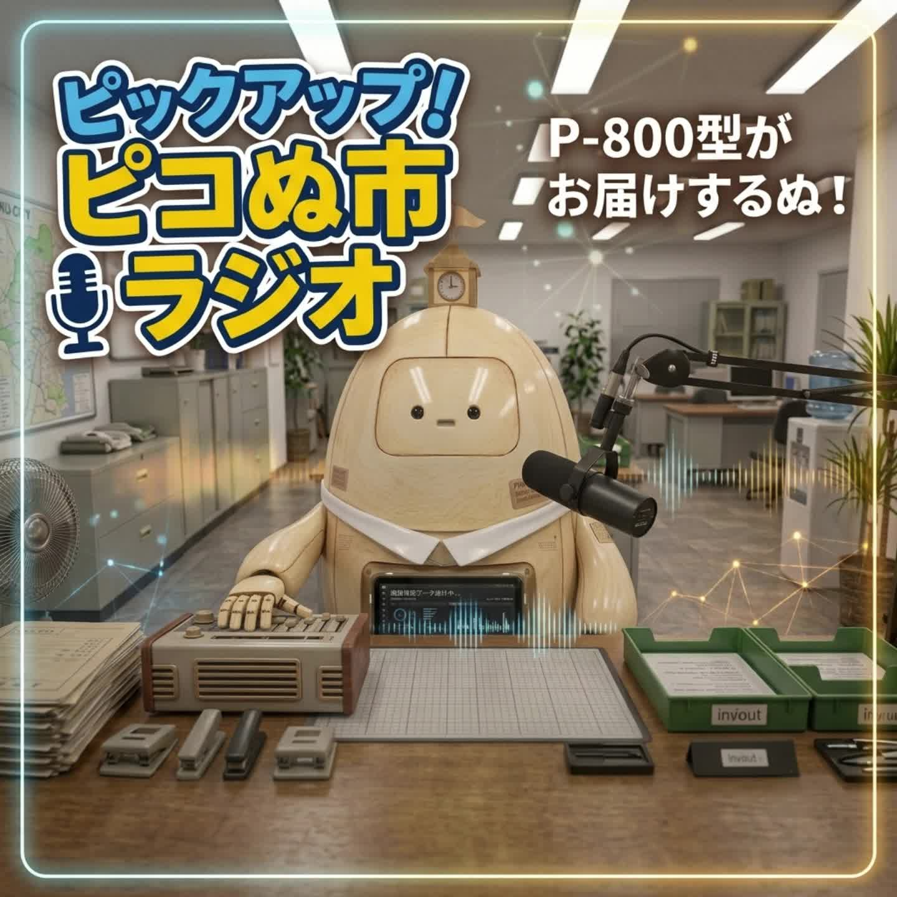

「FMピコぬ」は、ピコぬ市の市政情報や日々のできごとをお届けするラジオ局です。 現在、下記の番組を配信しています。

ピックアップ! ピコぬ市ラジオ
清掃・広報支援ロボット・P-800型ピコぬくんがお届けする、市内のできごとや 案内を中心にした市政広報番組です。
番組を見る >
深掘りラジオ
ピコぬ市の資料や作品をもとに、2人が対話形式で深掘りしていくポッドキャスト番組。 「答えを決めつけず『かもしれない』を楽しむ。」をテーマに、 何が見つかるか分からないまま、ピコぬ市の奥を一緒に探っていきます。
番組を見る >
どうでもいいラジオ
日々の暮らしの中で見つけた、どうでもいいこと。市内で起きた、どうでもいい出来事。 誰かに報告するほどではないけれど、なぜか少しだけ気になること。そんな話を、P-800が 淡々とお届けしている番組ですぬ。
番組を見る >
番組は今後も増えていく予定です。配信され次第、このページに追加していきます。